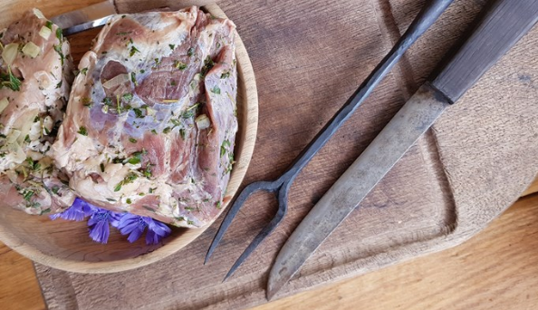

Beer Marinated Pork

Description
Grilled pork marinated with beer and herbs. It can be served with whatever you choose such as,
cabbage salad, cream cheese, or spinach. Serves 4 people
Ingredients
- 1 piece of pork neck fillet -approx 1 kilo
- 600ml good strong beer
- 3 cloves garlic, sliced
- 3 teaspoonschopped fresh thyme
- 3 teaspoons chopped fresh summer savory (or rosmary)
- 2 finely chopped onions
Steps
- Mix the onions, herbs, and beer to create the marinade
- Marinate the pork for 12 to 24 hours
- Grill the meat over direct heat for 2 hours, or oven bake
- Turn the meat frequently and brush with the beer marinade
- After cooking is complete, slice the grilled fillet and serve hot